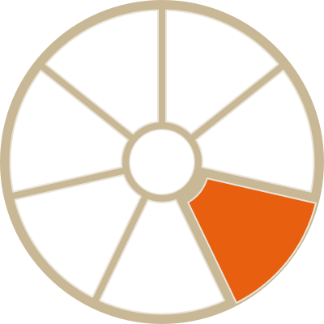

Generated reference documentation for Satsuma's Rust crates and TypeScript frontend.
Tauri command layer, window/tray/overlay lifecycle, platform integration — rustdoc.
Format detection and conversion engine, independent of Tauri — rustdoc.
React/TypeScript UI: components, hooks, and shared modules — TypeDoc.